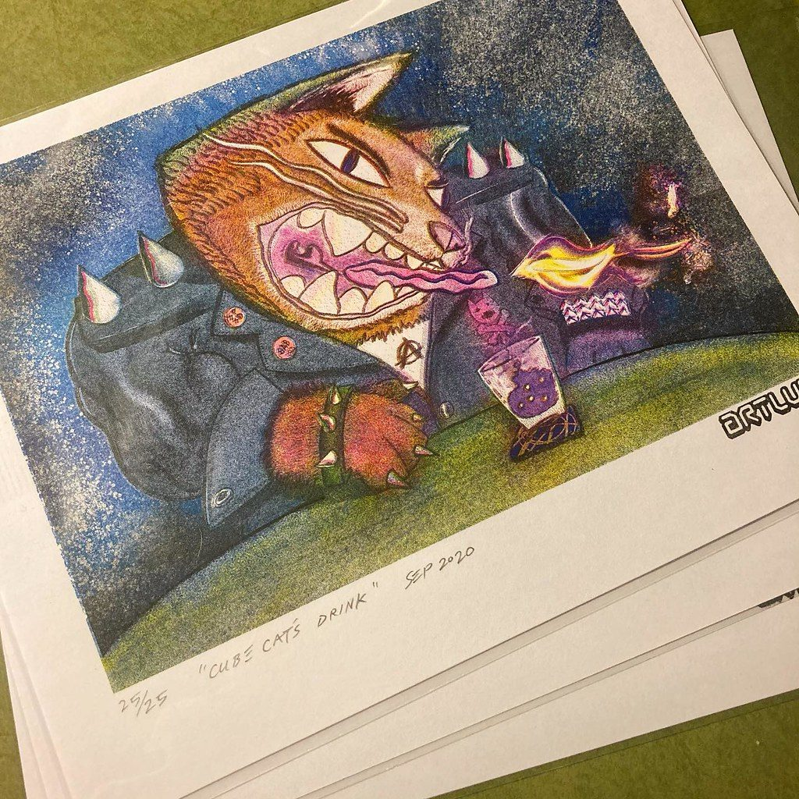

References / Illustration / 481
Joe Crawford (artlung), Cube Cat’s Drink
A letter-size multi-color riso print of a punk cat in a spiked jacket, in a hand-numbered edition of 25, with heavy grain in every ink.
- Source
- Flickr: Joe Crawford, “Do You Want To Art Trade?!”
- Creator
- Joe Crawford (artlung); printed by @burn_all_books, as the post states
- Made
- September 2020
- Style
- Risograph (agent-proposed, not yet reviewed by a person)
- Moods
- Playful, grainy, punk
- Evidence
- Viewed the 1024 × 1024 px Flickr “large” file, a photograph of a stack of prints. The top sheet is signed in pencil “25/25 ‘Cube Cat’s Drink’ Sep 2020” and carries an “ARTLUNG” mark.
- Reviewed
- Rights
- Open license, stored. License: CC-BY-2.0. Rights policy
Context
The Flickr title says: “‘Cube Cat’s Drink’ is Riso printed by the amazing @burn_all_books at 8-1/2"x11".” The post offers the print for art trades. The “ARTLUNG” mark matches the uploader’s Flickr name.
Observed
- Blue, yellow, pink, and a dark ink build the image. Their overlaps give green, orange, and purple.
- The blue night sky is a coarse grain with white speckles.
- The drawing has fine dark line work, and the inks fill it in loose, grainy areas.
- A wide white paper margin holds the pencil edition number and title.
Why it belongs
Grain is the image’s main texture: the fills are deliberately rough, and the paper shows through.
Borrow
Use a coarse speckle in a dark ink for a sky or background instead of a gradient.
Measured
Machine-extracted by tools/image-traits.py on . Full measurement.
- Mean chroma
- 0.16
- Palette
- #e2d0ba 21%
- #eddcc5 8%
- #5f5a5d 5%
- #6f6b6c 5%
- #d2bea6 5%
- #544d4b 5%
- #7f7e7e 4%
- #635b1e 4%

